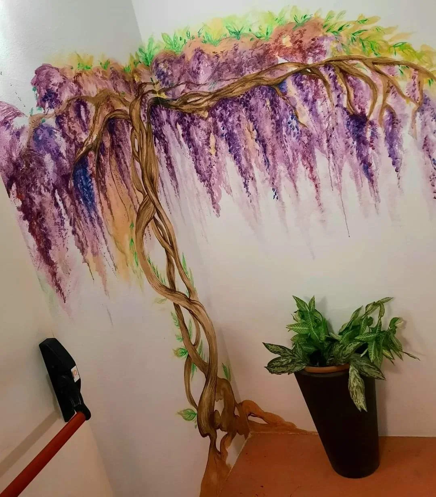
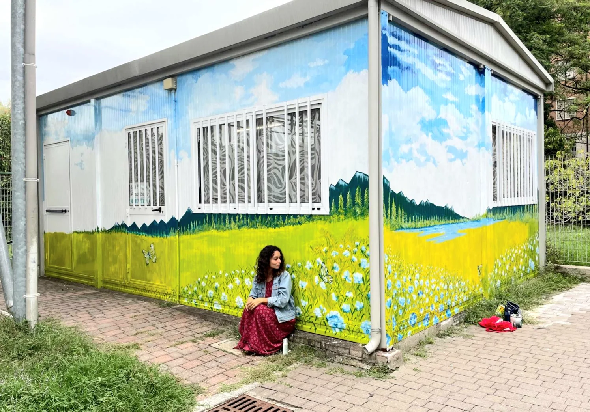

Écrivez-moi votre idée
Même si l'idée est encore floue, on la précise ensemble. Écrivez sur WhatsApp ou par email, je réponds sous 48h.
Menton
Des fresques à Menton pour maisons, villas, chambres, hôtels, restaurants et boutiques.
Écrivez-moi quel type d’espace vous avez et votre idée.
| Motif simple, floral, botanique | 150 € / m² |
|---|---|
| Motif détaillé, figuratif | 250 € / m² |
| Trompe-l’œil, plafond, faux marbre | 350 € / m² |
| Façade extérieure | 150 € / m² + échafaudage |
Pas de minimum de commande. Devis gratuit sous 48h, sans engagement.

Quatre étapes, aucun engagement avant le devis.
Même si l'idée est encore floue, on la précise ensemble. Écrivez sur WhatsApp ou par email, je réponds sous 48h.
Une photo et les dimensions approximatives suffisent. Dites-moi la ville, le type de lieu, et si le mur est intérieur ou extérieur.
Je vous envoie une esquisse numérique sur la photo de votre mur, avec le devis détaillé. Gratuit et sans engagement.
À partir de 150 € le m² pour un motif simple, davantage si le dessin est très détaillé. On fixe la date ensemble.
Les quatre questions qui reviennent le plus souvent.
À Menton, les motifs végétaux et floraux, parce que beaucoup de murs donnent sur un jardin, une cour ou une terrasse. Tout est peint à la main à l’acrylique, sans papier peint ni impression.
Non. Giulia peint sur l’enduit existant après un simple nettoyage. Si le mur est fissuré ou humide, elle le dit avant le devis et indique ce qu’il faut reprendre. Une fresque à l’acrylique se recouvre plus tard comme une peinture classique.
Toute l’année, ou presque. Le microclimat abrité permet de peindre dehors même en hiver, hors périodes de pluie.
Oui, c’est systématique. Giulia envoie une esquisse numérique posée sur la photo de votre mur, avec le devis détaillé. Gratuit, sans engagement, et vous pouvez demander des modifications avant de valider.
Ici, la peinture peut ouvrir l’air d’une pièce et accompagner une vie plus calme.
Chambres, salons, cages d’escalier, entrées, couloirs et plafonds. Exemple : un mur de chambre de 8 m² en motif simple, environ 1 200 €.
Salles de restaurant, murs de chambre d’hôtel, vitrines, rideaux de fer, halls et bureaux. Sur un marché où les concurrents se ressemblent, une fresque est un des rares éléments qu’on ne peut pas copier. Exemple : une salle de restaurant de 15 m² en motif détaillé, environ 3 750 €.
Le vent est freiné ici, mais l’humidité marine reste. Un primaire anti-sel et une finition anti-UV suffisent. Pour une façade visible depuis la rue, l’accord du propriétaire ou de la copropriété suffit en général, plus une déclaration en mairie en secteur protégé. À partir de 150 € le m², plus l’échafaudage si nécessaire.
Giulia vit et travaille à Menton. Elle vient voir le mur, prendre les mesures et proposer une esquisse. Les demandes viennent surtout des villas des collines, des appartements du centre, des maisons du vieux Menton et des hôtels et restaurants du bord de mer. Le climat abrité de Menton est le plus doux de la Côte d'Azur, ce qui permet de peindre une façade ou un mur de jardin presque toute l'année. Elle se déplace aussi facilement partout ailleurs pour peindre.


Maisons, lieux d’accueil, portfolio et pages proches à découvrir.
Depuis Menton, le projet peut s’étendre vers ces lieux proches.
Fresques en Côte d’Azur pour villas, maisons, hôtels, restaurants, boutiques et lieux de bien-être.
DécouvrirFresques à Monaco pour appartements, résidences, hôtels, boutiques, spas et lieux professionnels.
DécouvrirFresques à Nice pour appartements, maisons, hôtels, restaurants, boutiques et lieux professionnels.
DécouvrirFresques à Sanremo pour villas, maisons, hôtels, restaurants, boutiques et lieux d’accueil.
DécouvrirFresques en Ligurie pour maisons, hôtels, restaurants, maisons d’hôtes, boutiques et lieux d’accueil.
DécouvrirLe mur de plus de 20 mètres pour Gaber et Jannacci, à Milan, dans la presse
Giulia Dal Bon, formée à l’Accademia di Belle Arti di Brera, Milan.
Chaque projet est chiffré sur mesure. Voici les formats les plus demandés.
Ce qui fait varier le devis : la surface à peindre, la complexité du motif, l'intérieur ou l'extérieur, l'état du mur avant préparation, la hauteur et le besoin éventuel d'un échafaudage, le délai souhaité et la distance depuis Menton.
Pour recevoir un devis, envoyez une photo du mur, ses dimensions approximatives et l'idée que vous avez en tête.
Supports : mur intérieur, façade extérieure, plafond, cage d'escalier, couloir, entrée, chambre d'enfant, chambre, salon, cuisine, salle de bains, vitrine, rideau de fer, mur de jardin, panneau mobile.
Lieux : maison, villa, appartement, résidence secondaire, hôtel, chambre d'hôtes, gîte, restaurant, pizzeria, café, bar, glacier, boutique, commerce, salon de coiffure, spa, salle de sport, cabinet médical, salle d'attente, crèche, bureau, showroom, cave.
Sujets possibles : paysage, motif floral et botanique, ciel de plafond, trompe-l'œil en perspective, personnages, animaux, faux marbre et faux bois, lettrage et enseignes peintes, reproduction d'une œuvre.
Fresque murale, peinture murale par une muraliste, décor mural, décoration murale, peinture décorative, trompe-l'œil, mur peint à la main, dessin sur mur : ce sont des noms différents pour le même travail à Menton. Giulia peint à la main à l'acrylique, en intérieur comme en extérieur, sans impression et sans papier peint.
Menton est la ville de Giulia : jardins d'agrumes, facades ocres de la vieille ville, villas des collines, hotels et commerces du bord de mer.
Giulia se déplace aussi à Côte d’Azur, Monaco, Nice, Sanremo.
Les formats les plus demandés sont indiqués plus haut, à partir de 450 €. Une petite fresque dans une chambre revient moins cher qu'une façade qui demande une préparation et un échafaudage. Le devis est gratuit et sans engagement.
Un mur simple demande deux à trois journées de peinture. Une pièce complète ou un motif très détaillé demande environ une semaine. S'ajoutent quelques jours pour l'esquisse et la validation.
Oui, avec une préparation du support et des peintures prévues pour l'extérieur. Le climat abrite de Menton est le plus doux de la cote. L'exterieur y est possible presque toute l'annee, hors periodes de pluie.
Pour un mur intérieur, non. Pour une façade visible depuis la rue, il faut en général l'accord du propriétaire ou de la copropriété, et une déclaration en mairie si le bâtiment est en secteur protégé. Giulia vous indique la démarche avant de commencer.
Oui. Une fresque peinte à l'acrylique se recouvre comme une peinture murale classique. Elle peut aussi être reprise ou agrandie plus tard.